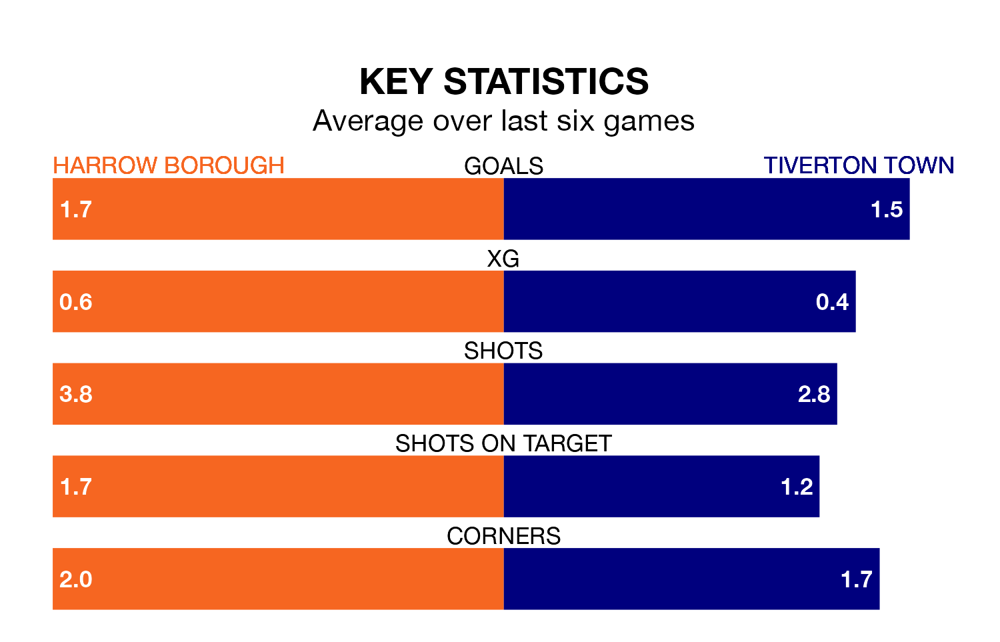

Struggling Harrow Borough face Tiverton Town at the Earlsmead Stadium on Saturday looking to build on a win in their last league outing.
After securing all three points with a 2-0 victory over Salisbury on April 13, Harrow sit 21st in the Southern League Premier South.
They travel to play a Tiverton side 19th in the standings, who also won their last match, 2-0 against Chesham United.
In the last 10 years, Harrow and Tiverton have played each other on seven occasions. They won one each, and they drew five times.
On average, Harrow scored 1.3 goals and Tiverton 1.3 in those matches.
Their last meeting was on November 11, when they played out a 0-0 draw.
With 54 goals in 39 games so far this season, Harrow are scoring at below the league average rate with 1.4 goals per game. And they are conceding more than average, letting in 88 goals at a rate of 2.3 per game.
Tiverton are also below average scorers, with 1.5 goals per game, compared to a league average of 1.7. They have conceded 1.9 goals per game.
Borough are in mixed form in the Southern League Premier South, with two wins and a draw from their last six games.
With four wins and two losses over that period, Town's form is better – they have taken 12 points from 18, compared to the hosts' seven.
Updated: 15:40 (UTC), 18/04/24